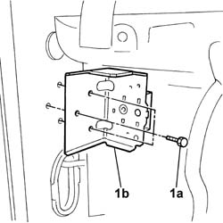
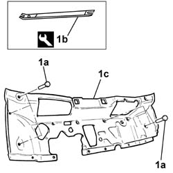

7095E20 soundproofing panel on passanger compartment front bulkhead r r with heater or airconditioner unit removed
- Path
- Procedures > 70 FITTINGS > 7095 MISCELLANEOUS BODYWORK > 7095E various body insulation elements > 7095E20 soundproofing panel on passanger compartment front bulkhead r r with heater or airconditioner unit removed
- Kind
- repair procedure (removal / refitting; the operation number is the code)
- Applies to
- all engines; all production periods
- Interactive page
- https://sloeber94.github.io/elrnDB-fDbl/en/#/2585244
Applies to: all engines; all production periods
 Removing
Removing
 Refitting
RefittingOp. 7025A34 BONNET LID LOCK (ONE) - R+R OR REPAIR
1. Undo the bolts and remove the bracket.

Applies to: all engines; all production periods
1. Open fastenings (1a) using tool (1b) and remove panel (1c).
 | Name | Country |
|---|---|---|
1b | Scraper blade | 1.878.077.000 |

Applies to: all engines; all production periods
Refitting
RemovingFit the soundproofing and secure with fastenings.
Fit the bracket and tighten the bolts to torque.
 | Fastening | Component | Ø | Value (daNm) |
|---|---|---|---|---|
- | Bolt | CROSSMEMBER MOUNTING BRACKET | M8 | 2.4 |